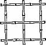
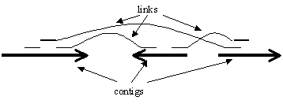
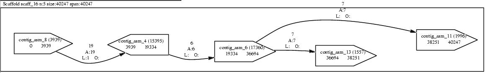

|  |
BAMBUS 2.33 User Manual |
Index
- Introduction
- Installation
- Running BAMBUS
- File formats
- Known problems
- Contact information
1. Introduction
The output of most shotgun sequence assembly programs (such as TIGR Assembler, phrap, or CAP3) consists in a set of un-related contigs, whose order and orientation along the chromosome is unknown. Scaffolding represents the task of ordering and orienting these contigs by using additional information about their relative placement. Traditionally such information was identified from the pairing of reads from the opposite ends of an insert in double-barelled shotgun experiments (see figure).

Besides clone mate information, homology data, physical maps, or gene synteny information can be used to derive relationships between contigs. BAMBUS is a program written to handle all such types of data in a generic fashion in order to build contig scaffolds. In order to account for the varied quality of linking information BAMBUS allows the user to specify a hierarchy that will consider the most reliable linking data first, then expand the scaffolds using less reliable data. This approach minimizes the effect of errors inherent to experimentally-derived linking information.
Algorithm overview
BAMBUS has two main modes of operation: hierarchical - when the links are considered in the order of their priorities, and standard - when all the links are considered at the same priority level. In the latter case, all links connecting two contigs are bundled together to form a "gap", or "edge" if you look at the problem from a graph theoretical point of view. Each link is checked for validity before being added to a bundle. Thus, a link is considered invalid due to a length constraint if it forces the two contigs to overlap. In other words, if we assume the largest possible size for the insert corresponding to the link, if the coordinates of the mate-pair within the contigs force the contigs to overlap, we discard the link assuming it is due to a misassembly (Note: this behaviour can be specified on a link-by-link basis). Links that pass this test are further checked for consistency. If they do not all agree in the relative orientations of the contigs they imply, a majority rule is used to retain only those links that agree both in orientation and length. Furthermore, the bundle, or edge, is retained if it contains at least two links (this parameter, redundancy, can actually be tuned by the user). After this step is complete, the resulting graph gets traversed twice, once to assign consistent orientations to all the contigs, and the second time to determine the order of the contigs along the chromosome. Note that inconsistencies in order are currently allowed since they can provide finishing teams with useful information. In a future version of BAMBUS we will add an option to allow the generation of unambiguous scaffolds as well. Currently you can generate such unambiguous scaffolds using the untangle program.
2. Installation
2.1. Prerequisites
- Unix (tested on RedHat 6.2 and higher, Solaris, and OSF 1) Does not work in cygwin!
- Perl 5.6 or later
- XML::Parser perl module
- Config::IniFiles perl module
-
GraphViz package
2.2. Obtaining BAMBUS
BAMBUS 2.3 is available free of charge under
the open-source Artistic
License
. 
To download Bambus please click here.
If you wish to receive update notices you can join the BAMBUS mailing list by clicking here.
2.3. Actual installation
- Find a directory where you want the software installed. For example /users/home/CoolUser
- Place the tar file bambus-2.33.tar.gz in this directory
- Unpack the distribution
% tar xvzf bambus-2.33.tar.gz - Go into the newly created directory
% cd bambus-2.33 - Carefully read the documentation
- Edit the file Makefile and change the value of BASEDIR to the correct installation
path, for example:
BASEDIR = /users/home/CoolUser - Also check if the path for perl (in variable PERL) matches the one on your
system. Several common options are:
PERL = /usr/local/bin/perl
PERL = /usr/bin/perl - Type 'gmake install' to have all the software installed. The executables will be in /users/home/CoolUser/bin/ and the documentation in /users/home/CoolUser/doc.
-
To get started you can try out the small test dataset provided in data/test_run by typing:
goBambus -c test.contig -m test.mates -o test-bambus
3. Running BAMBUS
The input to Bambus consists in a set of links between contigs. These links can be inferred from the pairing of reads belonging to the same insert, from physical map data, or from alignment to another genome. To accomodate these types of sources of linking information, and to allow for further extensions, the input to Bambus is presented in a general purpose XML format. For more information about this format click here.
The following sections describe how the XML file can be generated for each type of linking data.
Linking information is grouped into "libraries". All links within a library have similar parameters. In the case of mate-pair linking information the libraries match the standard definition. For other linking data, for example MUMmer links, the library grouping reflects specific characteristics of the linking data. For example all MUMmer links are grouped within a library called "MUMmer".
3.1 Command line options
Bambus consists in a collection of programs controlled by a script called goBambus. The execution is controlled by the following sets of parameters. To obtain a list of all parameters and basic help information you need to type:
goBambus
-h
or
goBambus -help
3.1.1 Configuration options
-C <conf_file> . This parameter specifies the configuration file used by Bambus. A configuration file is not required, however it is useful if you want to change the default parameters. Click here for a detailed description of the configuration information.
Whenever you run Bambus it will generate a default configuration file called default.conf. If you want to modify the parameters, you will need to rename this file and then edit it.
3.1.2 Input Options
-a
<asm_file> . Use a TIGR Assembler .asm file as source of linking
information.
-c <contig_file> .
Use a GDE formatted .contig assembly file
as source of linking information. The .contig
files can be obtained either from TIGR Assembler output (by concatenating the
contents of the .align directory) or by
converting .ace files (created by phrap
or Consed) using the ta2ace
package.
-x <xml_file>. Use additional
XML formatted linking information. You can use the -x
option multiple times. The format for the XML file is described here.
-mx <make_file>. Use a gmake compatible
make file to specify how the additional XML information is generated. Each of
the files created must end in ".xml".
Moreover, only the final XML targets are allowed to end in ".xml"
to prevent goBambus from getting confused. A more detailed description on using
makefiles is presented here.
3.1.3 Mate-pair Information
Assembly output (such as .asm and .contig files) does not generally contain any information about the pairing of reads coming from opposite ends of the same insert, nor about the membership of inserts to libraries. The following parameters specify how to obtain this mate-pair information.
-m
<mates_file> . The mates file allows you to specify both library
information and mate pairing information, using a system based on Perl regular
expressions. For more information about the file format click here.
-D <database> . At TIGR, instead
of a mates file you can opt to use a database to obtain library and mate information.
Note that the -m and -D
options are complementary. The following three parameters specify database options:
-S <server> . Select a specific database
server
-U <user> . Log in with
the specified user name
-P <passwd>
. Log in with the specified password
3.1.4 Output Options
-o <output_prefix> . All the output file names will be generated from the <output_prefix> prefix.
3.1.5 Repeat Screening
Misassembled repeats can confuse Bambus, therefore it makes sense to screen the known repeats that may be misassembled. Bambus can use two types of repeat screening information:
-r
. Screen against the repeats listed in the database (option -D must be provided)
-r <repfile> . Screen against repeats described in <repfile>. For
a detailed description of the repeat file format click here.
3.1.6 Flow-control
-start <num>
-end
<num>. The execution of Bambus consists in a set of steps. The user
can choose to start or end at a specific step for example in the case when she
modifies the configuration file and wants to re-run just the final steps of the
scaffolders. This feature should be used with caution.
3.2 Typical use cases
3.2.1 Using assembler output
For convenience, Bambus can use the output of an assembly program and automatically generate the required linking information. Two types of information are required:
-
the tiling of reads in the assembly
-
information about the pairing of reads
The first type of information can be obtained from the .asm or .contig output formats of TIGR Assembler. For more information about these file formats please refer to the TIGR Assembler documentation. Note that the .contig file may be stripped of all sequence data as the only information used is that contained in the lines starting with #. In case you are using an assembler other than TIGR Assembler you may need to use the ta2ace package to convert the output into the .contig format.
The second type of information can be obtained from a .mates file whose format is presented below, or from the database in case you are at TIGR.
A typical command line for someone outside of TIGR is:
goBambus -c test.contig -m test.mates -o test
and the execution will generate the following files:
test.stats
- statistics on scaffolds and libraries (format described here)
test.details - detailed information about
each contig pair (also called "gap"). This file is described
here.
test.dot - GraphViz formatted
description of the contig linkage information. This file is described here.
test.evidence.xml - XML representation
of all the linking evidence provided. The format is described here.
test.out.xml - XML representation of the
scaffolds. Format described here.
test.lib
- list of the codes associated with each input library. These codes are reported
on the links in the output file.
test.sum
- one-line sumaries of all scaffolds. Format described here.
test.oo
- order and orientation information for all the contigs. Format described here.
Additionally, the program generates some "working" files that are currently not removed as they provide useful debugging information.
test.detective.xml
- linking information derived from assembler input alone. It's the same as test.evidence.xml
unless additional XML files are provided in the input.
test.inp
- input to the core scaffolding engine.
test.grommit.conf
- configuration information for the scaffolding engine
To view the graphical output you need to convert it to Postscript with the command:
dot -Tps -o test.ps test.dot
Then you can view the postscript file with the command:
gv test.ps
At TIGR, instead of specifying a .mates file you can use the database:
goBambus -c test.contig -D gbx -U access -P access -o test
3.2.2 Getting more (or less) information from the output
You can modify the information you get in the output by directly calling the printScaff command. PrintScaff requires as inputs the .evidence.xml file, the .out.xml file and the .lib files produce by Bambus, the minimal invocation being:
printScaff -e test.evidence.xml -s test.out.xml -l test.lib
Optionally you may specify the output prefix with option -o (just like in the Bambus invocation).
PrintScaff has parameters that control what gets reported, and in what format. In the first category you have:
-dot
- produce a .dot file
-detail
- produce a .details file
-oo
- produce a .oo file listing all the contigs in each scaffold
-sum - produce a .sum
tab delimited list of scaffold stats (#contigs, size, and span)
-f
<fasta_file> - generate a pseudo-molecule for each scaffold using
the contig sequences listed in <fasta_file>.
note that the contigs in the scaffold files are names "contig_<id>"
while the contigs in the <fasta_file>
must simply be called "<id>".
Note that this option together with the default -merge
option (see below) is meaningless unless you've untangled
the scaffold.
-phys - create a .phys
file listing all "gaps" spanned only by the specified libraries:
printScaff -e test.evidence.xml -s test.out.xml -l test.lib -phys MUMmer
will generate a file called test.phys that contains all contig pairs linked by nothing but MUMmer links.
In the second category you have:
-page - produce .dot
file formatted for printing on 8.5x11" paper
-plot
- produce .dot file formatted for printing
on a plotter (36x48" paper)
-unused
- draw edges corresponding to unused links
-merge
- (default) when the -f option
is given, produce a pseudo-molecule for each scaffold by adding 60 N
characters between the contigs in the scaffold
-nomerge
- when the -f option is given,
create a fasta file containing all contigs in each scaffold in the correct orientation
3.2.3 Adding additional XML linking information
You can easily add additional linking information as long as it's in a format similar to the .evidence.xml file. Assuming we have two such files "link1.xml" and "link2.xml" you can call Bambus as follows:
goBambus -c test.contig -m test.mates -x link1.xml -x link2.xml -o test
The result being the same as if you concatenated the XML file inferred from the .contig file together with the two additional XML files.
3.2.4 Using MUMmer links
In case you are sequencing a genome for which a close relative has been completed, you can use MUMmer to infer links between contigs. Assume you have the reference genome in a file "ref.fasta" and all the contigs from the genome you are assembling in a file called "test.fasta", you can run MUMmer to align the test genome to the reference:
nucmer -a max-match ref.fasta test.fasta
The output will be placed in a file called out.delta. You can then convert the alignment information into an XML file suitable for Bambus as follows:
show-tiling -x out.delta > test.mum.xml
And finally you can provide this information to Bambus:
goBambus -c test.contig -m test.mates -x test.mum.xml -o test
3.2.5 Using Makefiles
If you have multiple XML files, it becomes tedious to generate each file separately and then provide them to Bambus with multiple -x options. You can create a Makefile compatible with GNU make that generates each of the XML files. You must be careful that the targets for all the XML files end in ".xml", and no other targets (such as intermediate targets) have the same suffix. Bambus will assume that all .xml files produced by the Makefile must be added to the input.
An example of a simple Makefile that can generate the mummer information described above is:
test.mum.xml:
ref.fasta test.fasta
nucmer -a max-match ref.fasta test.fasta
show-tiling
-x out.delta > test.mum.xml
3.2.6
Untangling scaffolds
By default, the scaffolds resulting from Bambus are potentially ambiguous as two or more contigs may occupy the same place in the genome. Such situations occur either due to misassembled repeats, or when assembling different haplotypes. Bambus contains a utility that does a best effort attempt to disambiguate the scaffolds, by breaking them into a set of non-ambiguous scaffolds. The algorithm is greedy and does not guarantee that an optimal solution (e.g. a minimum number of longest scaffolds) is produced.
To run the untangler type:
untangle -e test.evidence.xml -s test.out.xml -o test.untangle.xml
The test.untangle.xml file has
the same format as the output file (.out.xml)
and for each scaffold (e.g. scaff_1)
contains one or more unambiguous scaffolds called "scaff_1_1,
scaff_1_2, etc". You can use the printScaff
command to process the untangled file the same way you would process a
normal Bambus output.
4. File formats
4.1 The configuration file
Scaffolding parameters can be specified in a configuration file. Whenever you run Bambus a default configuration file is generated as default.conf. To create your own file you should rename this file then edit it. The following types of information can be specified:
-
Comments. Lines starting with # are considered comments and are ignored by the software.
-
Priority information. Specifies an order in which the libraries are considered. For example, the line:
priority MUMmer 2
specifies priority 2 for all MUMmer links. The libraries are considered in the increasing order of priorities.
If no configuration file is provided, all libraries are assumed to have the same priority. If a configuration file is provided, only those libraries that have a priority record are used in scaffolding. In other words, if a library has no priority record associated with it, it will not be used in scaffolding.
A priority can also be specified for a specific redundancy parameter. For example, the line:
priority redundancy 4 1
specifies that those links between contigs supported by 4 or more sources of linking data should be processed at priority level 1. Note, however, that you need to also specify a set of libraries to be used at this priority level. A simple shortcut is:
priority ALL 1
specifying that all link classes should be processed at this redundancy..
If you are uncertain of which libraries your project uses, run Bambus without a configuration file. The libraries will be listed in a file ending in ".libs". -
Redundancy information. Specifies the minimum number of links required for a valid inter-contig link. You can specify this parameter as a global value:
redundancy 2
that is, all contigs must be linked by at least two links. You can also specify a per-library value:
redundancy MUMmer 1
that is, a single MUMmer link is required to link two contigs. -
Minimum scaffold size. Specifies a scaffold size cutoff. For example:
mingroupsize 10000
implies that only scaffolds that contain more than 10kbp are present in the output. -
Link size error. For some link types, determining the exact link length can only be done within a certain error. This parameter specifies, as a percentage, the estimated error in size determination. For example, since MUMmer links make an assumption of evolutionary closeness between two genomes, the error associated with them should be proportional to the estimated evolutionary distance (as nucleotide % similarity) between the two genomes. The syntax for the error parameter is:
error MUMmer 0.05
for an error of 5%. -
Overlapping contigs allowed. For each library you can control the link validation process by specifying whether adjacent contigs are allowed to overlap or not. By default mate-pair links assume adjacent contigs do not overlap, while MUMmer links allow contigs to overlap. This is equivalent to the configuration parameters:
overlaps lib_1 N
overlaps MUMmer Y
An example is provided in data/sample_files/bambus.conf.
4.2 The .mates file
The .mates file provides two types of information: library data, and mate-pair relationships between reads.
Library data can be described in two formats:
library
<name> <min_size> <max_size>
and
library
<name> <min_size> <max_size> <regexp>
Both formats require you to name each library and to provide a size range for the inserts belonging to it. The second format allows you to also provide a Perl regular expression that describes the naming convention for reads belonging to the library. The part of the sequence name that represents the library name must be placed within parantheses. As an example, the regular expression for TIGR sequences (where the library is specified by the first 4 characters) is:
(....).*
Mate-pair relationships can also be described in two ways:
pair
<regexp_forw> <regexp_rev>
or
<seq_forw>
<seq_rev> <library_name>
The first format requires two regular expressions corresponding to the forward and reverse mates of an insert. Just like the library record, the portion of the name corresponding to the insert name must be placed within parantheses. Two reads that match the two regular expressions, and have the exact same section matched within the parantheses will be considered mates. The library will be determined from the regular expression associated with a "library" record. As an example, at TIGR the first 7 characters represent the insert, then are followed by an optional T or P and the primer name (F/R). The corresponding regular expression is:
pair (.......)[TP]?F (.......)[TP]?R
The second format is simply a list of sequence name pairs each followed by the name of the library they belong to. The corresponding library records must be listed in the file before the pairing data.
Note that fields in the .mates file must be separated by TAB characters otherwise the program will report an error.
An example of a .mates file using the phred/phrap naming convention is provided in data/sample_files/bambus.mates.
4.3 Repeat files
The repeat files used in screening linking data conform to the output standards of the repeatFinder program. The file contains 5 TAB-delimited values: contig ID, repeat name, left and right coordinates within the contig, and contig class. Only the first 4 values are essential as far as Bambus is concerned. Here is an example of repeat records:
AC009139.7.3
RPT1A 14554 96820 1
AC026498.3.2 RPT1B 124208 206475 1
4.4 .evidence.xml
This provides an XML representation of the input file. Below is a description of the data presented in this file (see also an example):
The overall flow of the XML file is:
<EVIDENCE>
<LIBRARY>
<INSERT>
<SEQUENCE/>
<SEQUENCE/>
</INSERT>
...
</LIBRARY>
...
<CONTIG>
<SEQUENCE/>
...
</CONTIG>
...
<LINK>
<CONTIG/>
<CONTIG/>
</LINK>
...
</EVIDENCE>
<EVIDENCE | this
is the parent tag - the whole document occurs within <EVIDENCE> and </EVIDENCE> some identifier for the file date when file was created verbose description of the project parameters used in creating this file |
<LIBRARY | for
each shotgun library you need a separate library tag. some identifier for the library verbose name for the library minimum size of inserts in this library maximum size of inserts in this library |
| <INSERT ID="ins_1" NAME="GALBZ92" > | the
insert concept links together the two reads obtained from opposite ends of a clone
insert |
| <SEQUENCE ID="seq_1" NAME="GALBZ92TF" > | each
insert contains two sequence reads obtained from to the opposite ends generic identifier for the sequence verbose name for the sequence |
| <CONTIG ID="contig_1" NAME= "1" LEN="12352" > | Each contig
in the assembly needs to be represented in the file |
| <SEQUENCE ID="seq_1" ORI="BE" ASM_LEND="0" ASM_REND="525" > | each
sequence in the contig is listed together with information about the position
within the contig. sequence identifier (must match one described in the library section) orientation of sequence: BE - forward, EB - reverse coordinate of sequence's left end within the contig coordinate of sequence's right end within the contig |
| <LINK ID = "link_1" SIZE = "-800" TYPE = "MUMmer" > | this
is a generic link between two contigs (i.e. not inferred from mate-pair data) |
| <CONTIG ID = "contig_1" ORI = "EB" > | each
link contains two contigs contig identifier: must match one described in the contig section above contig orientation: BE - forward, EB - reverse each contig record may contain free-form data specifying the evidence for linking: e.g. alignment data |
4.5 .out.xml
Represents, together with the evidence file, a description of the layout of the contigs. For each scaffold, the order (given as a coordinate along a chromosome) and the orientation of each contig is presented, together with a list of all the links used to generate this layout. Some links are deemed invalid, being given a code of "LEN" in case the length was deemed incorrect, or "ORI" in case the link orientation was considered incorrect. This file is also specified by the DTD and an example (data/sample_files/bambus.out.xml).
4.6 .stats file
Finally, BAMBUS outputs a summary of the scaffolds generated. This file is pretty much self-explanatory, as evidenced by this example (data/sample_files/bambus.stats). Note that in the .stats file, the N50 sizes are computed with respect to the total span of the scaffolds unless a different genome size is specified in a file called genome.size.
4.7 .details file
The .details file contains detailed information about the linking information between adjacent contigs. The contigs' orientation, size, and coordinates are listed and then all the linking data grouped by validity and library. An example is provided in data/sample_files/bambus.details.
4.8 .dot file
Represents a graphical representation of the scaffolds in GraphViz format. Please see the AT&T GraphViz website for more information on this file format.
4.9 .ps file
A postscript image generated from the GraphViz-formatted file.
It can be obtained from the .dot file with the command:
dot
-Tps -o prefix.ps prefix.dot
An example is given in the picture below.

{kind=link}
Each scaffold is placed in a box, labeled with some statistics on the scaffold size (number of contigs, number of bases and span). All the "gaps" - linking relationships between the contigs are represented as edges. Each edge is decorated with the number of links contributing to it, the number of links from each library type, and the number of links invalidated due to incorrect length (L) or orientation (O). Each contig's ID, size, and coordinates within the scaffold are also listed.
4.10 .oo file
This file contains a summary of the order and orientation of all contigs present in the data. Each scaffold starts with a FASTA-like header containing the identifier for the scaffold followed by the number of contigs, size and span. Within each scaffold, all contigs are listed in the scaffold order, followed by the string BE for those in the forward orientation and EB for those in the reverse orientation. An example file is shown in: data/sample_files/bambus.oo.
4.11 .sum file
This file contains one line for each scaffold. Each line contains the scaffold ID, number of contigs, scaffold size, and span. The four values are separated by TAB characters. See an example in data/sample_files/bambus.sum.
5. Known problems
There
is a small "off-by-one" error in computing contig coordinates. It should
not really affect the usefulness of the output.
6. Contact information
BAMBUS is currently provided AS-IS, in other words we do not provide any support for the software. We would, however, like to hear your comments and suggestions. Click here to contact the BAMBUS team.
BAMBUS was written by Mihai Pop and Dan Kosack.